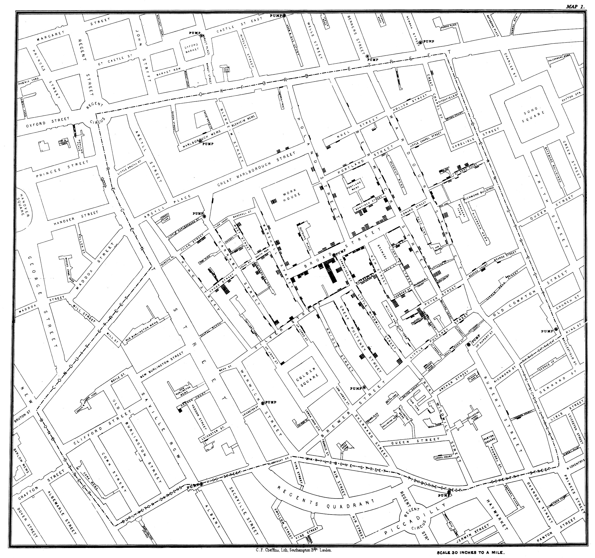
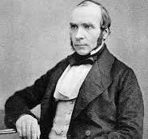

John Snow was born on March 15, 1813, in York, England, and died on June 16, 1858, in London, at the age of 45. From humble origins, Snow became a physician and excelled in both epidemiology and anesthesiology.
Read more on Wikipedia →
As deaths accumulated, Snow interviewed families street by street, tracing each victim’s water source. He later visualized his findings in a revolutionary way. The first uses of spatial analysis to understand an epidemic...
Snow then mapped every public water pump across the district. By dividing the region into proximity zones, assigning each household to its nearest pump, a pattern emerged: a striking concentration of deaths around the Broad Street pump.